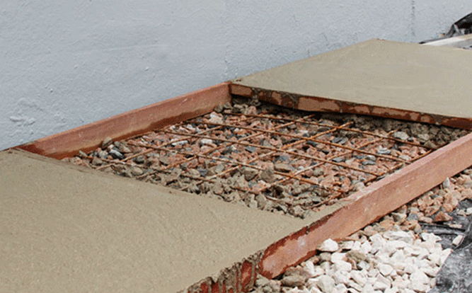
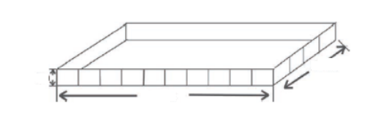

Você chegou ao último módulo da etapa 2, finalizando o projeto de construção da casa. Ao idealizar a construção de sua casa própria, cada detalhe é minuciosamente pensado para que o ambiente que será seu lar seja o mais aconchegante possível. Para compor a decoração e os acabamentos do lar, você pode buscar lojas do comércio em geral, como de materiais de construção, de móveis, de departamento, entre outras.
Alguns objetos e materiais utilizados em construções e decorações têm suas formas, medidas e quantidades previamente calculadas, como forma de evitar o desperdício ou a falta deles, por exemplo, a quantidade de concreto necessário a uma calçada, a capacidade da caixa-d'água que abastecerá a residência, a quantidade de tinta para pintar as paredes, entre outros, para manter o bom andamento e a finalização da obra, conforme planejado.
Pensando nos detalhes da conclusão da obra, para começar, será realizada a construção da calçada ao redor da casa, mas agora surgiram algumas dúvidas. Qual o material necessário para fazer a calçada? Deve ser usado concreto ou piso? Qual será a medida da calçada?
O primeiro passo é decidir a medida da calçada. O segundo passo é escolher qual o melhor tipo de material para usar na calçada. As opções possíveis são concreto, piso, pedra ou outro material adequado.
Com a ideia de reservar um espaço para ser construído um jardim e uma garagem, na frente da casa, serão deixadas uma parte de concreto e outra de grama. A calçada terá 140 centímetros de largura, 500 centímetros de comprimento e 10 centímetros de altura e será concretada, sendo a faixa central da entrada da casa.
Para construir a calçada, o responsável da obra pode fazer uma estrutura com ripas de madeira. Além de servirem como guia na espessura do concreto e no nivelamento, também servirão para segurar a massa. Veja na figura a seguir.
Ao orçar os custos de uma obra, percebe-se que todos os gastos fazem diferença. O ideal é não ter desperdício de material, calculando o volume necessário para preencher o espaço formado pelas ripas com concreto.
Com o intuito de descobrir o volume, observe as particularidades dos formatos que serão utilizados como moldes para construir a calçada e, com isso, poder realizar os cálculos de acordo com as representações que lembram os sólidos geométricos.
Você já reparou que, observando ao seu redor, entre os objetos que o cercam, é possível encontrar representações de sólidos geométricos? Alguns objetos presentes em obras de engenharia, arquitetura, artes plásticas, entre outros, mostram a imensa quantidade de formas que podem ser relacionadas com figuras estudadas na geometria. Sólido, em geometria, é uma figura geométrica tridimensional, pois tem três dimensões: comprimento, largura e altura. Os sólidos geométricos podem ser classificados em poliedros ou corpos redondos.
Veja alguns exemplos de sólidos geométricos.

Veja os objetos representados a seguir, identifique os que lembram sólidos geométricos e arraste-os para seu espaço correto: corpos redondos ou poliedros.
Algumas formas de objetos podem ser estudadas matematicamente por meio de representações chamadas de sólidos geométricos. Os sólidos geométricos compreendem grandes grupos, como os poliedros e os corpos redondos. Poliedros são sólidos geométricos que não têm formas arredondadas e possuem três elementos.
Veja na figura:
Indique o poliedro correspondente às faces destacadas. Clique primeiramente sobre a alternativa e depois sobre seu poliedro correspondente.
O formato da imagem da construção da calçada é semelhante ao que, na matemática, no grupo dos poliedros, se chama prisma especificamente de bloco retangular ou paralelepípedo. Prisma é quando o sólido geométrico tem duas bases paralelas, que são polígonos congruentes; as demais faces são retangulares. Ele é nomeado conforme com o polígono das suas bases.
No cotidiano, é possível identificar vários objetos que lembram o formato de um prisma, por exemplo, sapatas, pilares, prédios, entre outros. No quadro a seguir, é possível ver dois exemplos comparando os objetos citados e os prismas.


Observando a animação a seguir, é possível associar sua forma à de um prisma de base retangular, que também é popularmente chamado de “paralelepípedo” ou “bloco retangular”. Então o formato da calçada que será construída terá o formato de um paralelepípedo, conforme a comparação a seguir.
São utilizadas três medidas para determinar a dimensão de uma calçada, as medidas recebem as denominações comprimento, largura e altura. Para calcular o espaço necessário para preencher com o concreto, é utilizada a multiplicação das medidas do paralelepípedo. Veja a fórmula a seguir.

A multiplicação do comprimento pela altura dá a dimensão da base.

No caso do formato da calçada, as medidas são 140 centímetros de largura, 500 centímetros de comprimento e 10 centímetros de altura. Para calcular o volume de concreto necessário para preencher esse prisma, são multiplicados:

Considerando os cálculos para não haver desperdício de material na construção da calçada, será necessário um volume de concreto correspondente a setecentos mil centímetros cúbicos. A unidade de medida do volume é sempre elevada ao cubo. Por exemplo: metro cúbico (m³), centímetro cúbico (cm³), entre outros. Esse procedimento de cálculo é válido para calcular o volume de qualquer prisma com base retangular.
1. Davi adora flores e resolveu construir uma caixa para arrumar os seus 40 vasos com mudas de orquídea. Primeiramente, achou melhor verificar quais as dimensões necessárias para comportar todos os seus vasos. Sabendo que os vasos têm o formato de cubo com 5 cm de aresta, Davi precisa construir a caixa com as seguintes medidas:
Ilustração de uma caixa retangular com as indicações de altura, largura, comprimento. O comprimento contém uma divisão de 10 quadrados e a largura de 4 quadrados.
Fonte: Adaptado de Oliveira (2017)
2. Joana está estudando geometria espacial na escola e, ao chegar em casa, separou os seguintes brinquedos:

Quatro figuras de objetos: 1. cubo mágico, 2. cone, 3. bola de futebol e 4. pirâmide.
Fonte: Tudo Sala de Aula (2020)
Ela fotografou os objetos nessa ordem e enviou para a sua colega. Então comentaram que o único objeto que poderia ser calculado o seu volume a partir da fórmula do prisma, estudado em aula, era o objeto correspondente a ________________.
3. Para calcular o volume de qualquer prisma com base retangular, é necessário saber suas medidas de largura, comprimento e _____________.
Veja alguns exemplos de reservatórios de água utilizados, clicando nos botões a seguir.
Tanto a caixa-d'água quanto a cisterna têm suas medidas e capacidades previamente informadas e estabelecidas. Observe que ambas podem apresentar o formato cilíndrico. Mas como fazer para descobrir quanto um objeto de formato cilíndrico comporta em seu interior?
Observe os elementos que compõem esta forma. O cilindro é um sólido geométrico, classificado como corpo redondo, com formato alongado e arredondado. Seus principais elementos são as duas bases, a altura, a área lateral e o raio da base.
Tanto o círculo quanto a circunferência apresentam os mesmos elementos: o diâmetro é a distância de um lado ao outro, passando pelo centro da figura, e o raio é a distância entre a borda da figura e seu centro, representando a metade do diâmetro. A corda é um segmento de reta que liga dois pontos da circunferência.
Depois de conhecer os elementos de um cilindro, é possível responder à pergunta anterior: como descobrir quanto um objeto de formato cilíndrico comporta em seu interior? Para isso, deve-se calcular a área do círculo.
A = π (PI) . r²
Fórmula da área do cilindro, que é igual a pi multiplicado pela altura.
Em que:
Com essa informação, é possível calcular o volume de uma caixa-d’água ou cisterna com o formato de um cilindro. Como a base do cilindro é circular, primeiramente deve-se calcular a área do círculo e depois multiplicá-la pela altura. Veja os exemplos em que a fórmula de cálculo do volume do cilindro foi aplicada em situações reais.
Volume do cilindro = área da base . altura
Fórmula do volume do cilindro, que é igual à área da base multiplicada pela altura.
Onde:
Área da base = π. r² (área do círculo)
Fórmula da área da base, que é igual a pi multiplicado pelo raio ao quadrado (área do círculo).
π (PI) = 3,14
Fórmula do pi, que é igual a três, vírgula, quatorze.
Durante a obra, você aprendeu sobre os elementos básicos de uma construção aliados aos conteúdos matemáticos. Eis que é chegado o momento de pintar a casa. Saiba que diversas características devem ser levadas em consideração, como a superfície a ser pintada, que pode ser composta de inúmeros tipos de materiais, tais como: madeira, alvenaria ou gesso, podendo ser localizados tanto na área interna como externa da casa. Isso influencia a quantidade de tinta a ser utilizada, pois cada superfície tem uma absorção diferente. O tipo de tinta, a quantidade de demãos1, o rendimento de cada tinta e a metragem da área a ser pintada precisam ser observados cuidadosamente.
Pense que já foi definido o tipo de tinta, foram escolhidas as cores, separados todos os materiais e está tudo pronto para fechar o orçamento. Mas e a quantidade? Quantas latas de tinta serão necessárias à pintura?
Para fazer o cálculo das latas de tinta necessárias à pintura, é importante saber estipular a quantidade a ser usada, afinal, ninguém quer desperdícios comprando demais e jogando dinheiro fora. Por outro lado, comprar menos do que se precisa e se deparar com a falta de produto também não é desejável, pois essa situação pode gerar atrasos e perda de tempo, de forma desnecessária. Para fazer essas estimativas, serão utilizados cálculos matemáticos. Veja como clicando nos passos a seguir.
É hora de praticar! Clique no botão a seguir para acessar a atividade.
Você se lembra que já foi realizada uma escolha parecida no módulo II? Foi preciso arredondar um valor decimal para a compra da tela para cercar o terreno e também a quantidade de caixas de piso, pois eles não eram vendidos por unidade. Esse mesmo arredondamento será feito com as latas de tinta. Dessa forma, serão necessárias duas latas de tinta com 3,6 litros cada uma.
Nas lojas de materiais de construção, existem diferentes tipos de embalagens para armazenar a tinta, a maioria das embalagens tem formato cilíndrico. Por isso, dependendo da quantidade de tinta necessária, deve-se comprar uma embalagem menor ou maior, com intuito de economizar.
Afinal, a quantidade de tinta na lata é verdadeira?
É possível verificar esse dado. Será analisada a lata de tinta da figura, que tem uma base circular, com 5 cm de raio e 15 cm de altura.
Inicialmente, é preciso calcular a área do círculo da base da lata, que é parte necessária para o cálculo do volume. A área do círculo é calculada por meio da seguinte fórmula:
A = Pi . r2
Fórmula de “A”, que é igual a pi multiplicado pela medida do raio elevado ao quadrado.
Sabe-se que a lata de tinta tem um raio de 5 cm, então esse dado entrará na fórmula.
A = 3,14 . 52
Fórmula de “A”, que é igual a três, vírgula, quatorze multiplicados por cinco elevado ao quadrado.
A = 3,14 . 25
Fórmula de “A”, que é igual a três, vírgula, quatorze multiplicados por vinte e cinco.
A = 78,5 cm2
Fórmula de “A”, que é igual a setenta e oito, vírgula, cinco centímetros quadrados.
A base da lata tem uma medida de 78,5 centímetros quadrados. Com essa medida, calculam-se o volume ou a quantidade de tinta que essa lata tem capacidade de armazenar. O volume do cilindro é calculado com a seguinte fórmula.
Volume da lata = área da base x altura
Fórmula do volume da lata, que é igual à área da base multiplicada pela altura.
Aplicando os valores encontrados na fórmula, tem-se o seguinte cálculo.
Volume da lata = 78,5 cm2 . 15 cm
Fórmula do volume da lata, que é igual a setenta e oito, vírgula, cinco multiplicados por quinze centímetros.
volume da lata = 1177,5 cm3
Fórmula do volume da lata, que é igual a mil, cento e setenta e sete, vírgula, cinco centímetros cúbicos.
Essa lata de tinta tem a capacidade de armazenar, aproximadamente, 1177,5 cm3 (centímetros cúbicos) de tinta. No dia a dia, são encontradas, mais frequentemente, as quantidades de tinta dadas pela unidade de medida litro. Dessa forma, são convertidos centímetros cúbicos para decímetros cúbicos, utilizando os conhecimentos anteriores para convertê-los em litros.
Primeiramente, são transformados os 1177,5 cm3 (centímetros cúbicos) em dm3 (decímetros cúbicos), dividindo esse valor por 1000. Visto que a cada 1 dm³ (decímetro cúbico) há 1000 cm³ (centímetros cúbicos). Com a transformação, são obtidos 1,1775 dm3 (decímetros cúbicos), que agora podem ser transformados em litros.
1 dm3 = 1l
Fórmula de um decímetro cúbico, que é igual a um litro.
1,1775 dm3 = 1,1775 litros
Fórmula de um, vírgula, um, sete, sete, cinco decímetros cúbicos, que é igual a um, vírgula, um, sete, sete, cinco litros.
A lata de tinta em questão tem a capacidade de armazenar 1,1775 litros de tinta. Dificilmente são encontradas construções que não utilizam tinta ou algum item líquido que precise ser medido pelo procedimento de cálculo de volume.
Responda às questões 1 e 2 de acordo com o seguinte enunciado. Nas construções, com o objetivo de criar entradas de luz, sem necessariamente criar aberturas, ou seja, janelas, podem ser utilizados os tijolos de vidro substituindo os tijolos de barro, que não permitem a passagem de luz. Os tijolos de vidro, na sua maioria, têm o formato de um paralelepípedo com base retangular. Para colocá-los na parede, é realizada uma composição com várias peças. Na loja de construção, foi escolhido o tijolo que mede 14,6 x 14,6 x 8 cm.
1. Qual é o comprimento e a largura mínimos que devem ser deixados para colocar 6 tijolos alinhados na vertical e 4 tijolos alinhados na horizontal?
a) Comprimento 87,6 cm e altura 58,4 cm. ! b) Comprimento 48 cm e altura 32 cm. c) Comprimento 87,6 cm e largura 48 cm. d) Comprimento 48 cm e largura 58,4 cm.
2. Qual é a área total ocupada por esses 24 tijolos?
a) A área total é de aproximadamente 1536 cm². b) A área total é de aproximadamente 4204,8 cm². c) A área total é de aproximadamente 2803,2 cm². d) A área total é de aproximadamente 5115,84 cm². !
3. Um condomínio residencial tem um modelo de lixeiras com o formato cilíndrico, medindo 1 m de raio e 1 m de altura. No momento da licitação das lixeiras, o síndico do condomínio chegou à conclusão que cada 1 m3 custava R$ 257,00, já que o valor total da lixeira era de R$ 806,98. Depois de algum tempo de uso, notou-se que as lixeiras ficaram pequenas para a demanda de lixo do condomínio, então novas medidas foram estipuladas para as lixeiras. Elas serão de 2 m de raio e 1 m de altura. Sabendo que o valor do m3 permanece o mesmo, qual será o novo valor individual de cada lixeira? (Considere o pi = 3,14.)
a) R$ 1.694,32 b) R$ 2.594,92 c) R$ 3.227,92 ! d) R$ 4.994,32
Durante a construção da casa, houve diversos momentos em que foram aplicados inúmeros conceitos matemáticos. Você pôde perceber o quanto a matemática está presente e faz a diferença no dia a dia, dando meios para obter informações que facilitem sua vida. Ainda foi possível observar os cálculos matemáticos em outras situações, e, muitas delas, serão investigadas na etapa 3. Que bom que você chegou até aqui e ainda tem um mundo para explorar! Até a próxima etapa!
ASTH, Rafael. Circunferência. Toda Matéria, c2011-2022. Disponível em: https://www.todamateria.com.br/circunferencia/. Acesso em: 29 ago. 2022.
ASTH, Rafael. Sólidos Geométricos. Toda Matéria, c2011-2022. Disponível em: https://www.todamateria.com.br/solidos-geometricos/. Acesso em: 25 ago. 2022.
ATIVIDADE de matemática - figuras geométricas planas e espaciais - questões com gabarito (5°/6º/7° ano). Tudo Sala de Aula, 22 out. 2020. Disponível em: https://www.tudosaladeaula.com/2020/10/figurasgeometricas.html. Acesso em: 29 ago. 2022.
BRASIL. Congresso Nacional. Senado Federal. Senado Notícias. MP cria programa Casa Verde Amarela no lugar do Minha Casa, Minha Vida. Brasília, 26 ago. 2020. Disponível em: https://www12.senado.leg.br/noticias/materias/2020/08/26/mp-cria-programa-casa-verde-amarela-no-lugar-do-minha-casa-minha-vida. Acesso em: 22 ago. 2022.
BRASIL. Ministério da Cidadania. Acesso à informação. Programa Cisternas – água para beber e para agricultura. Brasília, [s.d.]. Disponível em: https://www.gov.br/cidadania/pt-br/acesso-a-informacao/carta-de-servicos/desenvolvimento-social/inclusao-social-e-produtiva-rural/programa-cisternas-2013-agua-para-beber-e-para-agricultura. Acesso em: 24 ago. 2022.
CASTRO, José Victor Barbosa Jardim. Poliedros. InfoEscola, c2006-2022. Disponível em: https://www.infoescola.com/geometria-espacial/poliedros/. Acesso em: 23 ago. 2022.
CENTRO DE CIÊNCIAS E EDUCAÇÃO SUPERIOR A DISTÂNCIA DO ESTADO DO RIO DE JANEIRO – Cecierj. O pi não é de pizza. Dinâmica 3. 9º ano. 4º bimestre. Rio de Janeiro. Disponível em: https://canal.cecierj.edu.br/012016/5f0a1f289466a2580c28c9200c309a7b.pdf. Acesso em: 29 ago. 2022.
CIRCUNFERÊNCIA e círculo. Matreemática, c2020-2022. Disponível em: https://lirte.pesquisa.ufabc.edu.br/matreematica/a-matematica-do-cotidiano/ramos/geometria/geometria-plana/circunferencia-e-circulo/. Acesso em: 29 ago. 2022.
CISTERNAS! Cálculo do tamanho necessário ao volume “Litros”. Faz Fácil, 24 ago. 2012. Disponível em: https://www.fazfacil.com.br/reforma-construcao/cisternas-calculo-volume/. Acesso em: 31 ago. 2022.
COMO fazer uma cisterna – calçadão. Semiárido Vivo, [s.d.]. Disponível em: https://semiaridovivo.org/pt/como-fazer-uma-cisterna-calcadao/. Acesso em: 14 out. 2022.
COMO reaproveitar a água da chuva. Construindo e Reformando, 10 jan. 2014. Disponível em: https://www.construindoereformando.com.br/artigos/como-reaproveitar-a-agua-da-chuva.htm. Acesso em: 29 ago. 2022.
COMPRIMENTO, largura e altura. Diferença, c2017-2022. Disponível em: https://www.diferenca.com/comprimento-largura-e-altura/. Acesso em: 24 ago. 2022.
FERREIRA, Samara Gisch. Existe padrão para calçada de casas, como largura e tipo de piso? Casa Dicas, [s.d.]. Disponível em: https://www.casadicas.com.br/transito/existe-padrao-para-calcada-de-casas-como-largura-e-tipo-de-piso.html#:~:text=Concreto%2C%20piso%2C%20grama%20e%20outros&text=Em%20muitos%20locais%2C%20tem%2Dse,moro%20e%20%C3%A9%20bem%20interessante. Acesso em: 23 ago. 2022.
GAY, Mara Regina Garcia; SILVA, Willian Raphael (ed.). Araribá Plus: matemática. Editora Moderna. 5. ed. São Paulo: Moderna, 2018. Disponível em: https://pt.calameo.com/read/0028993272abdf3412de0?authid=WUafkDApqRtY. Acesso em: 14 out. 2022.
GEOMETRIA Espacial I Cilindros Classificação dos Cilindros Retos. Slide ToDoc, [s.d.]. Disponível em: https://slidetodoc.com/geometria-espacial-i-cilindros-classificao-dos-cilindro-reto/. Acesso em: 29 ago. 2022.
MARQUES, Gabriel M. Aprenda como fazer uma calçada – passo a passo. Meia Colher, 22 jan. 2015. Disponível em: https://www.meiacolher.com/2015/01/aprenda-como-fazer-uma-calcada-passo.html. Acesso em: 22 ago. 2022.
NEVES, Flávia. Mão, demão ou de mão. Dúvidas de Português, c2009-2022. Disponível em: https://duvidas.dicio.com.br/mao-demao-ou-de-mao/. Acesso em: 29 ago. 2022.
NOVAES, Jean Carlos. Área do Círculo: Veja a Fórmula! Matemática Básica, c2015-2022. Disponível em: https://matematicabasica.net/area-do-circulo/. Acesso em: 30 ago. 2022.
OLIVEIRA, Raul Rodrigues de. Prisma. Mundo Educação, c2022. Disponível em: https://mundoeducacao.uol.com.br/matematica/prisma.htm. Acesso em: 23 ago. 2022.
OLIVEIRA, Tata. Matemática. Ensino Médio (secundário). Brainly, 24 jun. 2017. Disponível em: https://brainly.com.br/tarefa/10281911. Acesso em: 29 ago. 2022.
POLIEDROS: absolutamente tudo! Casa da Matemática, 28 fev. 2019. Disponível em: https://casadamatematica.com.br/poliedros-absolutamente-tudo/. Acesso em: 23 ago. 2022.
QUATRO tipos de caixa-d'água: qual é o melhor para a sua construção? 3TC Isolamento, 22 dez. 2020. Disponível em: https://www.3tc.com.br/blog/4-tipos-de-caixa-dagua-qual-e-o-melhor-para-a-sua-construcao/. Acesso em: 29 ago. 2022.
ROCHA, Carla. A importância e os cuidados de execução dos pilares de concreto. Mapa da Obra, 13 ago. 2020. Disponível em: https://www.mapadaobra.com.br/inovacao/pilares-de-concreto/. Acesso em: 22 ago. 2022.
SAIBA como calcular a quantidade de tinta certa para sua parede. Casas Jardim, c2017-2022. Disponível em: https://www.casasjardim.com.br/dicas/saiba_como_calcular_a_quantidade_de_tinta_certa_para_sua_parede-36.html. Acesso em: 18 ago. 2022.
SAPATAS para fundação. Bombeiros do Aço, c2019. Disponível em: https://bombeirosdoaco.com.br/produtos/ferragem-armada/sapatas-para-fundacao/. Acesso em: 22 ago. 2022.
SÓLIDO. In: Priberam Dicionário. Lisboa: Priberam Informática S.A., c2022. Disponível em: https://dicionario.priberam.org/s%C3%B3lido. Acesso em: 17 ago. 2022.
TIJOLO de Vidro 19x19x8cm Vitraltec. Cassol, c2022. Disponível em: https://www.cassol.com.br/tijolo-de-vidro-19x19x8cm-vitraltec/p?idsku=1434279&utm_source=google_shop&utm_medium=cpc&utm_campaign=ecomm_todos_produtos&gclid=CjwKCAjwx7GYBhB7EiwA0d8oe5AGN5GSc4l-dZlSDnLVgHoHxkTXg9cQUIEj20N1LTNdJN-EvQ4qBRoCWCMQAvD_BwE. Acesso em: 29 ago. 2022.
VEJA como concretar uma calçada em 8 passos. Mapa da Obra, 31 jan. 2017. Disponível em: https://www.mapadaobra.com.br/capacitacao/veja-como-fazer-calcada-de-concreto/?doing_wp_cron=1660855440.8291339874267578125000. Acesso em: 22 ago. 2022.